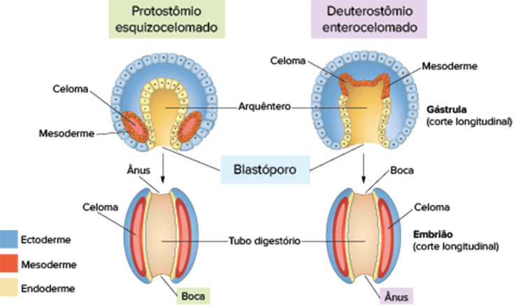

Eletromicrografia de um embrião humano com 16 células (fase denominada mórula) na extremidade de uma agulha.
O desenvolvimento embrionário é um dos eventos mais fascinantes e complexos dos animais. Tudo se inicia com o encontro do gameta masculino (espermatozoide) com o gameta feminino (óvulo), processo conhecido como fecundação. Nessa etapa, forma-se o zigoto – a primeira célula do embrião – e se inicia uma sucessiva onda de divisões celulares mitóticas que aumentam o número de células embrionárias. Em determinado momento do desenvolvimento, o embrião torna-se uma esfera maciça de células, semelhante a uma amora; por isso, essa estrutura é denominada mórula. Nessa fase, as células do embrião são totipotentes, ou seja, são capazes de formar qualquer tipo celular existente no corpo adulto. As mudanças que ocorrem logo após essa fase serão apresentadas ao longo deste capítulo. Essas transformações são fundamentais para que ocorra a correta formação dos órgãos existentes no organismo e podem ser utilizadas como fonte de dados importantes nas análises filogenéticas entre os diversos grupos de animais.
- O que são células totipotentes?
- A espécie humana apresenta desenvolvimento direto ou indireto?
- Qual fase do desenvolvimento embrionário ocorre logo após a fase de mórula?
Neste capítulo serão abordadas as habilidades EM13CNT202 .
Fases do desenvolvimento embrionário de uma bolacha-do-mar. A. Zigoto; B. Embrião com quatro células (blastômeros); C. Blástula prematura; D. Blástula tardia, com destaque para a blastocele (cavidade) e blastoderme (camada de células). Tamanho médio: 220 mm.
Embriologia animal
A embriologia animal é a área da Biologia que estuda as mudanças que ocorrem ao longo do desenvolvimento embrionário dos diversos grupos existentes de animais. Para tratar desse assunto, o anfioxo foi escolhido como modelo
didático para o estudo das principais etapas do desenvolvimento embrionário dos cordados, filo no qual o ser humano e demais vertebrados estão inseridos.
O anfioxo é um animal que vive em ambiente marinho e, por
apresentar um desenvolvimento embrionário relativamente simples, foi escolhido como modelo de estudo. Ele assemelha-se a um peixe pequeno sem uma cabeça propriamente definida e apresenta as duas extremidades do corpo
afiladas, característica que justifica o seu nome anfioxo (do grego amphi e oxus, que significam, respectivamente, “duas” e “cauda”).
Representação esquemática do anfioxo (animal cordado) e dos principais órgãos e estruturas existentes em seu corpo. Tamanho médio: 5 cm.
Após a fecundação e a formação do zigoto, o desenvolvimento embrionário dos animais cordados pode ser dividido em três etapas principais: segmentação, gastrulação e organogênese. Nesse período, o embrião se transforma em mórula, blástula, gástrula e nêurula. A seguir, estão apresentadas as principais etapas do desenvolvimento embrionário dos anima
Segmentação
Como já estudado no capítulo anterior, após a fecundação ocorre a formação do zigoto, que inicia sucessivas divisões mitóticas. Essa fase inicial do desenvolvimento embrionário é conhecida como segmentação ou clivagem e
constitui uma etapa fundamental para o aumento do número de células embrionárias.
Durante a segmentação, não ocorre aumento do volume do embrião, pois as células embrionárias produzidas, os blastômeros, dividem-se
de forma rápida, sem tempo para o crescimento. As divisões celulares que ocorrem nessa fase são responsáveis pela formação de um aglomerado compacto de células denominado mórula (do latim morula, que significa “pequena
amora”).
Após a formação da mórula, ocorre o acúmulo de líquido no interior do embrião e os blastômeros ficam dispostos em sua superfície formando uma estrutura denominada blástula. A cavidade preenchida por líquido
é denominada blastocele (do grego blastos, que significa “broto”, e do latim cela, que significa “cavidade”) e a camada de células que reveste a blástula é denominada blastoderme (do grego derma, que significa “pele”).
No anfioxo, a blástula apresenta dois tipos celulares: os micrômeros, que são células ligeiramente menores; e os macrômeros, que são células ligeiramente maiores.
REECE, J. B. et al. Biologia de Campbell. 10. ed. Porto Alegre: Artmed, 2015. Representação esquemática da gastrulação em embrião de anfioxo.
Tamanho médio: 90 µm.
Nos animais protostômios (do grego proto e stoma, que significam, respectivamente, “primeiro” e “boca”), o blastóporo origina a boca, e o ânus surge, posteriormente, no polo oposto. Como exemplos desses animais temos platelmintos (planária), nematelmintos (lombriga), anelídeos (minhoca), moluscos (caracol) e artrópodes (aranha). Nos deuterostômios (do grego deuteros, que significa “segundo”), o blastóporo origina o ânus dos animais, e a boca surge, posteriormente, no polo oposto. Como exemplos desses animais, temos equinodermas (estrela-do-mar) e cordados (vertebrados).
Gastrulação
A frequência das divisões celulares diminui após a segmentação. Nesse momento, grupos de células passam por um profundo rearranjo que origina uma estrutura embrionária remodelada denominada gástrula (do latim gaster, que
significa “estômago”). Essa fase de desenvolvimento define o plano corporal do futuro animal. A etapa de transformação da blástula em gástrula é denominada gastrulação, pois é nesse momento que se forma o esboço do
sistema digestório do animal. Os únicos animais que não passam pela fase de gastrulação são os poríferos e, como consequência, eles também são os únicos que não apresentam sistema digestório.
Durante a gastrulação,
ocorrem alterações significativas no embrião. Trata-se de mudanças na mobilidade, no formato das células, na adesão existente entre elas e na posição que ocupam no embrião. O resultado da gastrulação é a migração de
algumas células da blastoderme para o interior do embrião, formando três camadas de células, denominadas folhetos germinativos: a ectoderme, a mesoderme e a endoderme.
A migração de células para o interior do corpo
do embrião determina o desaparecimento da blastocele e possibilita a formação de uma nova cavidade denominada arquêntero (do grego arkhe e enteron, que significam, respectivamente, “primitivo” e “intestino”), ou gastrocele.
O termo “arquêntero” revela que essa estrutura é o primórdio do sistema digestório do organismo desenvolvido. O arquêntero é um tubo estreito e profundo que se comunica com o exterior por meio de uma abertura denominada
blastóporo.
No anfioxo, a gastrulação ocorre por embolia, processo em que acontece invaginação dos macrômeros, espremendo a blastocele.
A gástrula ligeiramente alongada do anfioxo apresenta duas camadas de
células: uma externa, denominada ectoderme; e outra interna, denominada mesentoderme – camada que formará a mesoderme e a endoderme.
GILBERT, Scott F. Biologia do Desenvolvimento. 5. ed. Ribeirão Preto: FUNPEC-Editora, 2003.
Representação esquemática da segmentação e da gastrulação do anfioxo.

GILBERT, Scott F. Biologia do desenvolvimento. 5. ed. Ribeirão Preto FUNPEC-Editora, 2003.
Representação esquemática do processo de organogênese do anfioxo.
Organogênese
Após a gastrulação, inicia-se a formação dos tecidos e órgãos, etapa denominada organogênese (do grego organo e genesis, que significam, respectivamente, “órgão” e “origem”). Nos animais cordados, ela se inicia com a formação
de duas estruturas cilíndricas na região dorsal do embrião: a notocorda e o tubo neural. Esse estágio do desenvolvimento é denominado nêurula (do grego neuron, que significa “nervo”).
A formação do tubo neural
se inicia na região anterior do corpo. As células mesodérmicas e/ou endodérmicas liberam moléculas que estimulam a diferenciação das células localizadas logo acima delas, a ectoderme. A diferenciação das células na
ectoderme dorsal produz uma placa achatada denominada placa neural. Esse processo progride ao longo da região dorsal até a extremidade posterior.
O dobramento da placa neural para dentro do corpo do embrião isola
um tubo de células ao longo do dorso, dando origem ao tubo neural. O fechamento do tubo neural ocorre a partir da regeneração do tecido ectodérmico localizado acima dele.
Na maioria dos cordados, a região anterior
do tubo neural se dilata e origina, no organismo adulto, o encéfalo, enquanto o resto do tubo permanece relativamente fino e origina a medula espinal. Uma falha no fechamento do tubo neural pode determinar o surgimento
de alguns tipos de malformação congênita neurológica. A anencefalia – ausência de encéfalo – é um exemplo. Trata-se de uma condição fatal causada pela falha no fechamento da região anterior do tubo neural. Outro tipo
de malformação congênita neurológica é a espinha bífida, condição patológica causada pela falha no fechamento da região posterior do tubo neural. A gravidade depende do local e do grau de comprometimento da medula espinal.
Além do tubo neural, a notocorda (do grego notos e khorde, que significam, respectivamente, “dorso” e “cordão”) é outra estrutura formada na região dorsal do corpo do embrião. Ela é também conhecida como corda
dorsal e pode ser definida como um bastão sólido de células que se isola da mesoderme e se instala paralelamente ao tubo neural. Essa estrutura é típica dos animais cordados e está presente em alguma etapa do desenvolvimento
embrionário de todos eles, desaparecendo na fase adulta da maioria das espécies.
Uma das principais funções da notocorda é fornecer sustentação ao corpo do embrião. Estudos recentes, entretanto, demonstraram que
outro papel importante da notocorda, além do suporte, é a liberação de moléculas que determinam a diferenciação do tubo neural nas diversas partes do sistema nervoso.
Somitos (do grego soma e ito, que significam, respectivamente, “corpo” e “origem”): blocos transversais de origem mesodérmica dispostos de forma regular ao longo dos dois lados do tubo neural do embrião.
Destino dos folhetos germinativos
Durante a gastrulação da maioria dos animais, as células embrionárias se organizam e se diferenciam em três conjuntos celulares: ectoderme, mesoderme e endoderme. Também conhecidos como folhetos germinativos, são organizados
de forma laminar e originam todos os tecidos corporais do organismo.
A ectoderme (do grego ektos e derma, que significam, respectivamente, “fora” e “pele”) é o folheto mais externo que reveste todo o corpo do embrião.
Ela origina a epiderme – camada mais externa da pele – e todos os anexos associados a ela, como pelos, unhas, glândulas sudoríparas e glândulas sebáceas. Além disso, a ectoderme dobra-se para o interior do corpo do
embrião, originando o sistema nervoso do animal.
O folheto que reveste o arquêntero do embrião é a endoderme (do grego endos, que significa “interno”). Ela origina todo o revestimento interno do sistema urinário,
digestório e respiratório, bem como pulmões, brânquias, fígado, pâncreas, glândulas salivares, tireoide e paratireoides.
A mesoderme (do grego meso, que significa “meio”) é o folheto que se encontra entre a ectoderme
e a endoderme. Ela se localiza ao longo do dorso do animal, disposta paralelamente ao tubo neural, e é dividida em blocos transversais denominados somitos. A segmentação em somitos determina a formação das vértebras,
dos nervos e dos músculos ao longo do corpo.
A mesoderme origina os sistemas esquelético, muscular, urinário, genital, cardiovascular e linfático. Além disso, a mesoderme também origina a derme (camada da pele
abaixo da epiderme), a notocorda, o tecido cartilaginoso e o córtex das adrenais.
TORTORA, Gerard. J.; DERRICKSON, Bryan. Princípios de anatomia e fisiologia. 14. ed. Rio de Janeiro: Guanabara Koogan, 2016
Quadro comparativo indicando as estruturas formadas a partir da ectoderme, da mesoderme e da endoderme
no organismo adulto.
Os animais triblásticos (do grego tri e blastos, que significam, respectivamente, “três” e “broto”) são os que apresentam os três folhetos germinativos. Como exemplo, temos os platelmintos (planária), nematelmintos (lombriga), anelídeos (minhoca), moluscos (caracol), artrópodes (aranha), equinodermos (estrela-do-mar) e cordados (vertebrados). Os animais diblásticos (do grego di, que significa “dois”) apresentam apenas ectoderme e endoderme. Devido à ausência da mesoderme, a organização corporal dos diblásticos é muito mais simples que a dos animais triblásticos. Como exemplo temos os cnidários (anêmonas e corais).
Cavidades corporais
Durante o desenvolvimento embrionário da maioria dos animais, ocorre a formação de cavidades corporais preenchidas por um líquido que atua como amortecedor mecânico entre a parede do corpo e o tubo digestório. (Atenção:
o termo “cavidade corporal” não se aplica à cavidade do sistema digestório.)
A presença dessas cavidades propiciou uma série de novidades adaptativas, que incluem transporte de substâncias, maior desenvolvimento
dos órgãos e atuação como esqueleto hidrostático (locomoção e sustentação do corpo).
Com relação à presença de cavidades corporais, os animais podem ser divididos em três grupos:
• Acelomados (do latim a que significa “sem”, e do grego kelos, que significa “cavidade corporal”): não possuem celoma na fase embrionária e, dessa forma, os adultos não possuem cavidades corporais. O corpo
desses animais é uma estrutura maciça e achatada de células derivadas da endoderme, mesoderme e endoderme, sem nenhuma cavidade interna. Exemplo: platelmintos (planária).
• Pseudocelomados (do grego pseudo, que significa “falso”): possuem uma cavidade denominada pseudoceloma, que é revestida de um lado pela mesoderme (parede do corpo) e do outro pela endoderme (tubo digestório).
Apesar do nome, o pseudoceloma é uma cavidade verdadeira e funcional preenchida por líquido. Exemplo: nematelmintos (lombriga).
• Celomados: possuem celoma na fase embrionária. Nesse caso, o celoma é uma cavidade totalmente revestida pela mesoderme. Essa cavidade origina os espaços (cavidades) existentes entre os órgãos do corpo,
como a cavidade torácica e a cavidade abdominal, permitindo uma melhor acomodação dos órgãos. Exemplos: anelídeos (minhoca), moluscos (caracol), artrópodes (aranha), equinodermas (estrela-do- -mar) e cordados (vertebrados).
Representação esquemática indicando as diferenças entre organismos acelomados, pseudocelomados e celomados.
Esquizocelomados e enterocelomados
Com relação à formação do celoma, os animais celomados podem ser classificados em dois grupos: esquizocelomados e enterocelomados. Nos animais esquizocelomados (do grego schizos, que significa “fendido”), a mesoderme surge a partir de células situadas nas proximidades do blastóporo. Essas células mesodérmicas preenchem todo o espaço interno do embrião e originam o celoma a partir de fendas internas que surgem após a morte celular programada de células internas.
Nos animais enterocelomados (do grego enteron, que significa “intestino”), a mesoderme surge a partir de evaginações (dobras para fora) da endoderme, formando bolsas que se dispõem entre a ectoderme e a endoderme. As bolsas mesodérmicas se desprendem e preenchem o espaço interno do animal; o espaço delimitado por elas é denominado celoma.
REECE, J. B. et al. Biologia de Campbell. 10. ed. Porto Alegre: Artmed, 2015.
Representação esquemática da formação do celoma e do desenvolvimento do blastóporo em animal protostômio esquizocelomado e em animal deuterostômio
enterocelomado.
Locais de desenvolvimento embrionário
Em alguns animais, como peixes e anfíbios, o desenvolvimento embrionário acontece no ambiente aquático. Nesses casos, os gametas são liberados na água e a fecundação é externa. Para garantir o sucesso reprodutivo, é necessário
que as fêmeas desses animais liberem grandes quantidades de óvulos na água, já que os embriões permanecem expostos ao ambiente sem nenhuma proteção dos pais. Apenas alguns dos descendentes desses animais atingem a fase
adulta.
Em animais que realizam a fecundação interna, como répteis e mamíferos, a produção de óvulos é menor e ocorre proteção parental aos embriões. Isso implica maiores chances de sobrevivência dos filhotes.
De acordo com o local de desenvolvimento dos embriões, esses animais podem ser divididos nos três grupos a seguir:
• Ovíparos (do latim ovi e parere, que significam, respectivamente, “ovo” e “dar à luz”): a fêmea elimina os ovos no ambiente externo e os embriões se desenvolvem à custa das reservas nutritivas existentes
nos ovos. Como exemplo de animais ovíparos, temos diversos peixes, a maioria dos répteis e vários invertebrados.
• Ovovivíparos (do latim ovi e vivus, que significam, respectivamente, “ovo” e “vivo”): os embriões se desenvolvem dentro de ovos que permanecem retidos no corpo materno, à custa das reservas nutritivas
existentes nos ovos, sem receber nutrientes adicionais da mãe. Essas condições fornecem maior proteção aos embriões, e os filhotes saem do corpo materno já completamente formados. Determinados invertebrados, alguns
peixes e certos répteis são exemplos de animais ovovivíparos.
Desenvolvimento direto e indireto
Os animais que produzem ovos com grande quantidade de vitelo ou aqueles cujos embriões recebem alimento diretamente da mãe formam descendentes semelhantes aos adultos. Esse tipo de desenvolvimento em que não há fase larval
é denominado desenvolvimento direto, sendo comum em répteis, aves e mamíferos.
O desenvolvimento indireto tem como característica a presença de estágio larval, sendo comum em muitos invertebrados e nos anfíbios.
Os ovos desses animais apresentam pouco vitelo e os embriões não recebem alimento diretamente da mãe. Assim, os descendentes apresentam estrutura mais simples e morfologia diferente da forma adulta. Essas formas são
denominadas larvas e são capazes de se locomover, explorar o ambiente e capturar grande quantidade de alimento, que é utilizado para se transformarem nas formas adultas. A transformação que ocorre na estrutura do corpo
das larvas para a formação das formas adultas é denominada metamorfose (do grego meta e morpho, que significam, respectivamente, “além de” e “forma”).
Tipos de anexos embrionários
Todos os embriões de animais vertebrados necessitam de um meio aquoso para se desenvolver. Durante o desenvolvimento embrionário, as células embrionárias realizam funções metabólicas essenciais, como trocas gasosas, obtenção
de alimento e eliminação de resíduos metabólicos. No caso de peixes e anfíbios, os embriões se desenvolvem no meio aquático e realizam muitas dessas funções diretamente no ambiente em que vivem.
A vida no ambiente
terrestre exige adaptações nos animais que previnem a desidratação e a desnutrição dos organismos em desenvolvimento. Desse modo, os vertebrados terrestres puderam conquistar esse ambiente somente após o surgimento
de estruturas que garantiam a independência da água para a reprodução, como o ovo com casca calcária dos répteis e das aves ou o desenvolvimento uterino dos mamíferos. Dentro de um ovo ou no útero materno, os embriões
continuam realizando as mesmas funções metabólicas que os demais embriões que se desenvolvem em meio aquático. Porém, os anexos embrionários propiciam um ambiente controlado que viabiliza a independência do ambiente
aquático para o desenvolvimento embrionário.
Na maioria dos vertebrados, os anexos embrionários são estruturas externas ao corpo do embrião, encarregadas de realizar as trocas gasosas, armazenar os resíduos metabólicos (excretas), obter nutrientes (alimento) e manter
um ambiente aquoso, protegido para o desenvolvimento do embrião.
Essas estruturas são produzidas por embriões de diversos peixes, répteis, aves e mamíferos, representando uma grande evidência do parentesco evolutivo
entre esses grupos de animais. Embriões de répteis e mamíferos ovíparos possuem os seguintes anexos embrionários: saco vitelínico, âmnio, alantoide e cório.
REECE, J. B. et al. Biologia de Campbell. 10. ed. Porto Alegre: Artmed, 2015.
Representação esquemática dos anexos embrionários existentes nos embriões de répteis e mamíferos placentários.
Saco vitelínico
Nos embriões da maioria dos vertebrados, existe uma bolsa membranosa que envolve o vitelo (alimento para o embrião), denominada saco vitelínico ou vesícula vitelínica. Esse anexo está presente nos embriões de diferentes
peixes, répteis, aves e mamíferos.
Durante o desenvolvimento dos embriões, o saco vitelínico é o primeiro anexo embrionário a ser produzido, sendo formado a partir do crescimento da endoderme e da mesoderme sobre
a massa de vitelo. As células endodérmicas do saco vitelínico produzem e liberam enzimas digestivas que aceleram o processo de digestão dos nutrientes do vitelo. Já a mesoderme é responsável pela formação dos vasos
sanguíneos do saco vitelínico, que absorvem e transportam os nutrientes para as células do embrião.
Em diversas espécies de peixes, répteis, aves e mamíferos ovíparos (ornitorrinco e equidna), o saco vitelínico
é uma estrutura bem desenvolvida, visto que esses animais produzem ovos megalécitos, ou seja, com grande quantidade de vitelo. Os nutrientes do saco vitelínico são suficientes para que esses animais completem o desenvolvimento
embrionário até que sejam capazes de conseguir alimento no ambiente em que sobrevivem.
Nos mamíferos vivíparos (marsupiais e placentários), o saco vitelínico é reduzido e desprovido de vitelo, sendo um exemplo
de estrutura vestigial. Isso ocorre porque os embriões dos mamíferos placentários se desenvolvem dentro do corpo materno e não dependem
da função nutritiva do saco vitelínico. Logo, a nutrição do embrião ocorrerá de forma contínua, por meio da placenta, possibilitando o desenvolvimento dele. Os mamíferos marsupiais, como o canguru, não possuem placenta nem saco vitelínico desenvolvidos. Nesses animais, os filhotes nascem muito pequenos e terminam seu desenvolvimento dentro do marsúpio (bolsa abdominal), onde se alimentam de leite materno.
Alantoide
O alantoide é um anexo embrionário derivado da porção posterior do intestino primitivo (arquêntero) dos animais vertebrados. A formação do alantoide se dá pelo crescimento da endoderme e da mesoderme, gerando uma bolsa
que delimita uma cavidade. Nos vertebrados ovíparos (répteis, aves e alguns mamíferos), a principal função do alantoide é armazenar excretas nitrogenadas produzidas durante o desenvolvimento embrionário.
O ácido
úrico é a principal excreta nitrogenada liberada por animais ovíparos, pois é insolúvel em água e pouco tóxico, podendo ser armazenado na cavidade do alantoide sem intoxicar os embriões. Além disso, o alantoide participa
das trocas gasosas, juntamente com o cório, e da transferência de cálcio da casca do ovo para o embrião. Nos mamíferos placentários, esse anexo é pouco desenvolvido e atua na formação dos vasos sanguíneos presentes
no cordão umbilical.
Âmnio
O âmnio, ou bolsa amniótica, é uma membrana extraembrionária, formada pelo crescimento da ectoderme e da mesoderme ao redor do corpo do embrião. Esse anexo embrionário delimita a cavidade amniótica, preenchida pelo líquido
amniótico, cuja função é manter o embrião protegido de traumas mecânicos (o líquido absorve impactos) e desidratação. O líquido amniótico impede que ocorra aderência entre o embrião e a casca do ovo ou entre os órgãos
externos durante o desenvolvimento embrionário.
A presença do âmnio representa uma grande conquista para a vida no meio terrestre. Ele pode ser encontrado em répteis, aves e mamíferos, caracterizando o grupo dos
amniotas. Ao final do desenvolvimento, praticamente todo o líquido amniótico é absorvido pelo corpo dos animais.
REECE, J. B. et al. Biologia de Campbell. 10. ed. Porto Alegre: Artmed, 2015.
Representação esquemática do ovo de um réptil com a indicação de suas principais estruturas.
Embrião humano com 45 dias, com destaque para a placenta e para o âmnio (bolsa translúcida envolvendo o embrião com líquido). Tamanho médio: 0,5 cm.
REECE, J. B. et al. Biologia de Campbell. 10. ed. Porto Alegre: Artmed, 2015.
Representação esquemática de um embrião humano no útero materno, com destaque para os anexos embrionários.
O sangue das artérias umbilicais é venoso e não arterial, pois é rico em gás carbônico e pobre em oxigênio. Já o sangue da veia umbilical é arterial e não venoso, pois é rico em oxigênio e pobre em gás carbônico.
Cório
O cório, ou serosa, é o anexo embrionário que envolve o embrião e todas as outras membranas extraembrionárias, sendo formado pela ectoderme e mesoderme. Nos vertebrados ovíparos, o cório se une ao alantoide formando o alantocório,
que fica sob a casca dos ovos e se espalha por todo o espaço disponível.
O alantocório possui uma grande rede de vasos sanguíneos que permite uma eficiente troca de gases entre o embrião e o ar ao redor da casca.
O gás oxigênio difunde-se pela casca, principalmente na câmara de ar, para os vasos do alantocório, que transportam esse gás para o corpo do embrião. O gás carbônico, produzido pela respiração das células embrionárias,
é transportado pelos vasos do alantocório até a casca, onde se difunde para a atmosfera. Nos mamíferos placentários, o cório é responsável pela formação das vilosidades coriônicas, presentes na placenta.
Placenta
A placenta é um órgão bem desenvolvido apenas nos mamíferos placentários, sendo formada por tecidos da parede do útero (tecidos maternos – endométrio) e pelas vilosidades coriônicas (tecidos fetais – cório). Esse órgão
permite a comunicação fisiológica entre mãe e feto, sendo responsável pela produção de hormônios, realização de trocas gasosas, nutrição, eliminação dos resíduos nitrogenados e defesa imunológica do embrião.
As
vilosidades coriônicas são altamente vascularizadas pelos capilares fetais que ficam mergulhados nas lacunas sanguíneas com sangue materno. O sangue do embrião circula apenas dentro dos vasos presentes nas vilosidades
coriônicas e não entra em contato direto com o sangue materno. Assim, as trocas de substâncias ocorrem pelas finas paredes que separam os capilares fetais e as lacunas de sangue da placenta. Os alimentos e o gás oxigênio
passam das lacunas sanguíneas para os capilares fetais. Já os resíduos nitrogenados e o gás carbônico passam dos capilares fetais para as lacunas sanguíneas.
O cordão umbilical é uma estrutura tubular que liga
o embrião à placenta, sendo formado pela mesoderme e pelo epitélio amniótico. Essa estrutura possui duas artérias, denominadas artérias umbilicais, que transportam o sangue do corpo do embrião para a placenta, e uma
veia umbilical que transporta o sangue proveniente da região da placenta de volta ao corpo do embrião. Por meio do cordão umbilical, ocorre o transporte de substâncias da mãe para o feto e vice-versa.
REECE, J. B. et al. Biologia de Campbell. 10. ed. Porto Alegre: Artmed, 2015.
Representação esquemática de um embrião humano no útero e da circulação materno-fetal.
O blastocisto humano é uma estrutura formada por uma camada de células, denominada trofoblasto, que delimita uma cavidade, denominada blastocele, e um aglomerado celular na forma de saliência na parede interna, denominado embrioblasto ou massa celular interna. O embrioblasto é responsável pela formação do corpo do organismo, enquanto o trofoblasto é responsável pela formação das membranas fetais e de parte da placenta.
Embriologia humana
Na espécie humana, no dia da ovulação, o ovócito II é liberado do ovário e, se houver fecundação, ela ocorre na tuba uterina. Após a fertilização, o ovócito II finaliza a meiose II e surge o zigoto, primeira célula do futuro
organismo. Em seguida, o zigoto inicia a segmentação, que representa a primeira fase do desenvolvimento embrionário. Durante o desenvolvimento, graças ao movimento dos cílios e da contração dos músculos lisos da tuba
uterina, o embrião humano é empurrado em direção ao útero (local de fixação).
Três a quatro dias depois da fecundação, o embrião chega ao útero na fase de mórula (com cerca de 16 células). No 6o dia de desenvolvimento,
o embrião está na fase de blástula (com cerca de 100 células), que nos humanos é denominada blastocisto.
Por volta do 7o dia após a fecundação, o embrião, ainda na fase de blastocisto, inicia sua fixação na parede
do útero, processo conhecido como nidação. Para que ocorra a fixação no útero, a zona pelúcida deve ser digerida por enzimas produzidas pelo trofoblasto. Esse processo, bem como o aumento da pressão osmótica interna,
permite que o embrião seja liberado da zona pelúcida.
TORTORA, Gerard J.; DERRICKSON, Bryan. Princípios de anatomia e fisiologia. 14. ed.
Rio de Janeiro: Guanabara Koogan, 2016
Representação esquemática do sistema genital feminino indicando a ovulação, a fecundação
e o início do desenvolvimento embrionário até a nidação no útero.
Após ser liberado da zona pelúcida, o embrião é capturado por uma rede de proteínas componentes do endométrio (revestimento da cavidade interna do útero). As células do trofoblasto que estão aderidas ao endométrio começam
a realizar divisões nucleares sem a ocorrência de divisões citoplasmáticas, originando uma massa citoplasmática cheia de células, denominada sinciciotrofoblasto. A camada de células individualizadas do trofoblasto que
recobre o corpo do embrião é denominada citotrofoblasto.
Durante o desenvolvimento do embrião, o sinciciotrofoblasto secreta enzimas que aceleram a digestão dos tecidos uterinos, abrindo cavidades por onde o embrião
se infiltra e cresce. A invasão do embrião estimula a proliferação de vasos sanguíneos na região, formando uma estrutura altamente vascularizada, denominada decídua uterina. As enzimas secretadas pelo sinciciotrofoblasto
também destroem as paredes dos vasos sanguíneos ao seu redor, formando as lacunas sanguíneas existentes na futura placenta.
Embriologia humana em 4 minutos, Academia Médica.
Esse vídeo demonstra, com excelentes imagens computadorizadas, todo o desenvolvimento embrionário humano, desde a fecundação até o parto, em apenas 4 minutos.
Disponível em: (https://www.youtube.com/ watch?v=j0ckprzQnuw).
Por volta do 14o dia de desenvolvimento embrionário, nota-se o aumento do endométrio ao redor do embrião. Em seguida, surgem as vilosidades do cório, que permanecem mergulhadas nas lacunas sanguíneas, originando a placenta, órgão
responsável pela nutrição, pelas trocas gasosas, pela excreção e pela defesa imunológica do embrião.
A gastrulação ocorre entre o 14o e o 19o dia de desenvolvimento, momento em que são formados os três folhetos germinativos
(ectoderme, mesoderme e endoderme). A organogênese, desenvolvimento dos órgãos do embrião, ocorre entre a 3a e a 8a semana de desenvolvimento. A partir da 9a semana de desenvolvimento, o embrião, com cerca de 2,5 centímetros
de comprimento, possui aparência tipicamente humana e passa a ser denominado feto. Nesse momento, as células ósseas iniciam o processo de ossificação do esqueleto embrionário cartilaginoso
Representação esquemática de um feto humano no útero materno, com destaque para a placenta, cordão umbilical, bolsa amniótica e saco vitelínico. A. Embrião humano com 5 semanas e 1 cm de comprimento; B. Feto humano com 16 semanas e 6 cm de comprimento envolvido pela bolsa amniótica.
Representação esquemática das fases do trabalho de parto natural. A. Antes da dilatação do colo do útero; B. Dilatação do colo do útero; C. Nascimento do bebê; D. Perda da placenta.
O parto ocorre cerca de 9 meses (40 semanas ou 280 dias) após a fecundação. O parto natural consiste na expulsão do feto por meio de contrações da musculatura lisa do útero, local em que ele se desenvolve. Quando chega
o momento do parto, a musculatura lisa do útero se contrai de forma rítmica e o colo do útero dilata. A ruptura da bolsa amniótica promove extravasamento de líquido pela vagina, sinalizando que a mãe já se encontra
em trabalho de parto. O feto é gradualmente empurrado para fora do corpo materno, graças às fortes contrações da musculatura lisa do útero. A dilatação da vagina possibilita a passagem do feto pelo canal vaginal até
o exterior do corpo.
A placenta (porção fetal) também é eliminada juntamente com o cordão umbilical, que ainda permanece preso ao corpo do feto. Após o nascimento, o cordão umbilical é cortado e amarrado, originando
uma cicatriz no corpo adulto denominada umbigo.
O emprego de técnicas de reprodução assistida tem aumentado a frequência de nascimento de gêmeos. Essas técnicas incluem tratamento que estimula a superovulação, liberando mais de um ovócito II por ciclo menstrual. Além disso, a fertilização in vitro eleva significativamente as chances de formação de gêmeos, porque é implantado mais de um embrião no útero materno.
Formação de gêmeos
O termo gêmeos (do latim geminus, que significa “duplicado”) é utilizado para se referir aos irmãos que vieram de uma mesma gestação materna. Na espécie humana, a formação de gêmeos é um fenômeno relativamente raro, ocorrendo em menos de 1% das gestações. Os gêmeos podem ser geneticamente diferentes (gêmeos dizigóticos) ou geneticamente iguais (gêmeos monozigóticos) entre si.
Gêmeos dizigóticos
Os gêmeos dizigóticos, também conhecidos como fraternos ou bivitelínicos, surgem quando uma mulher libera mais de um ovócito II na tuba uterina no dia da ovulação, fenômeno conhecido como poliovulação (do grego polys, que significa “muitos”). Cada ovócito II pode ser fecundado por um espermatozoide diferente, formando zigotos distintos que se fixam em diferentes pontos do útero. Dessa forma, cada embrião possui a própria placenta e a própria bolsa amniótica.

Gêmeos dizigóticos, um do sexo feminino e outro do sexo masculino.
Gêmeas monozigóticas.
Neste caso, os gêmeos são geneticamente diferentes entre si, pois são formados a partir de zigotos diferentes. Dessa forma, os irmãos podem ter sexos diferentes e a semelhança genética entre eles é a mesma que entre irmãos que não são gêmeos.
Gêmeos monozigóticos
Os gêmeos monozigóticos, também conhecidos como idênticos, surgem quando, a partir de um único zigoto, formam-se dois ou mais embriões. Os embriões formados são geneticamente iguais entre si e apresentam, necessariamente,
o mesmo sexo. Com relação ao fenótipo, os gêmeos são muito parecidos, mas não são exatamente idênticos, apresentando diferenças com relação à arcada dentária, íris do olho, impressão digital, comportamento e diversas
outras características que não são determinadas apenas pelo genótipo.
Em alguns casos, os gêmeos monozigóticos surgem a partir da divisão do embrião na fase de mórula (entre 2 e 3 dias) antes da fixação no útero,
resultando em dois blastocistos que se fixam em pontos diferentes do útero, originando gêmeos com placentas e bolsas amnióticas separadas.
Na maioria das situações, os gêmeos monozigóticos surgem logo após a fixação
do embrião no útero (entre 4 e 8 dias), ocorrendo divisão do embrioblasto que origina embriões distintos. Nesses casos, os embriões compartilham a mesma placenta, mas possuem cada um a sua própria bolsa amniótica.
Os gêmeos monozigóticos não são formados a partir da fecundação de um ovócito por mais de um espermatozoide, como muitas pessoas imaginam. Se mais de um espermatozoide fecundar o mesmo ovócito, fenômeno conhecido como polispermia, o zigoto formado será poliploide e inviável, ou seja, não completa o desenvolvimento embrionário.
Somente em alguns casos raros é que os gêmeos monozigóticos compartilham a placenta e a bolsa amniótica. Isso ocorre quando a divisão do embrião ocorre tardiamente (entre 9 e 15 dias) após a fixação no útero. Nesses casos, somente os cordões umbilicais são exclusivos de cada um deles.
Fraternal twins, identical twins and other types of twins. Disponível em: (https://raisingchildren.net.au/pregnancy/health-wellbeing/twin-pregnancy/twins). Acesso em: 10 set. 2020.
Representação esquemática dos tipos
de formação de gêmeos monozigóticos.
Existem casos raros, os quais os gêmeos monozigóticos se separam muito tardiamente e permanecem unidos por alguma parte do corpo. Nesses casos, os gêmeos podem compartilhar um ou vários órgãos corporais, sendo denominados gêmeos unidos, conjugados, siameses ou xifópagos (muitos são unidos pelo osso esterno, na altura do apêndice xifoide). Existem diversos graus de compartilhamento de tecidos e órgãos entre os gêmeos unidos. Apenas em alguns casos, a separação cirúrgica pode ser realizada sem comprometer a sobrevivência dos gêmeos.
Questão resolvida
1
Unicamp-SP Um cidadão foi preso por um crime que não cometeu. O exame do DNA encontrado na cena do crime revelou que ele é compatível com o do indivíduo apontado como culpado. As provas colhidas em um outro crime, ocorrido durante a reclusão do suposto criminoso, curiosamente apontaram o mesmo perfil genético, colocando em xeque o trabalho de investigação realizado. As suspeitas então recaíram sobre um irmão gêmeo do indivíduo.
- Como são denominados os gêmeos do caso investigado? Que tipo de análise seria capaz de distinguir os gêmeos ?
- Descreva os processos de fecundação e desenvolvimento embrionário que podem ter gerado os gêmeos envolvidos no caso investigado.
Resolução:
- Gêmeos monozigóticos, ou univitelinos. Para distingui-los, poderia ser utilizada a análise de alguma característica fenotípica, como a impressão digital, o padrão da íris, a presença de cicatrizes, entre outras.
- Na fecundação, houve a fusão de um espermatozoide com um ovócito II, formando um único zigoto. Durante o desenvolvimento embrionário, ocorre a separação das células embrionárias com formação de dois embriões separados, sendo que cada um origina um organismo.
1
Observe a seguir imagens que representam as fases do desenvolvimento embrionário de um animal.
- Qual a sequência correta das fases do desenvolvimento embrionário?
- Qual número representa o zigoto?
- Indique quais números representam, respectivamente, a mórula, a blástula e a gástrula
- Em qual fase se formam os folhetos germinativos?
2
A ilustração a seguir representa um embrião de vertebrado no estágio de nêurula.
- Como são denominadas as estruturas embrionárias indicadas pelas letras A, B, C e D?
- Que folhetos germinativos são indicados pelos números I, II e III?
- Como esse animal é classificado com relação à presença de cavidades corporais? Justifique sua resposta.
3
O que são anexos embrionários e quais são suas funções?
4
A ilustração a seguir representa, de forma comparada, os embriões de répteis e de mamíferos placentários.
REECE, J. B. et al. Biologia de Campbell. 10. ed. Porto Alegre: Artmed, 2015.
- Como são denominados os anexos indicados pelas letras A e B?
- Descreva a importância da estrutura A para o desenvolvimento dos vertebrados terrestres.
- Por que a estrutura C não pode ser considerada um órgão exclusivamente embrionário?
5
A ilustração a seguir representa um ovo fechado de um réptil, com destaque para os anexos embrionários.
- Os anexos embrionários indicados por A e B são:
- Qual é a importância da casca calcária presente nos ovos de répteis?
6
Unesp 2018 Ao longo da evolução dos vertebrados, alguns grupos passaram a explorar o ambiente terrestre, o que demandou adaptações que permitissem o desenvolvimento do embrião nesse novo ambiente. A mais emblemática dessas
adaptações talvez seja o âmnio, razão pela qual os répteis (incluindo as aves) e os mamíferos são chamados de amniotas.
A importância do âmnio está em:
- armazenar o vitelo, que será consumido pelo embrião durante seu desenvolvimento.
- armazenar os resíduos metabólicos tóxicos que seriam lançados diretamente na água.
- permitir que ocorram trocas gasosas que garantam a respiração do embrião.
- permitir que o embrião se desenvolva protegido de choques mecânicos e dessecação.
- desenvolver uma rede de vasos que transportem nutrientes para o embrião.
7
A ilustração representa um feto humano e algumas estruturas relacionadas a seu desenvolvimento.
REECE, J. B. et al. Biologia de Campbell. 10. ed. Porto Alegre: Artmed, 2015.
- Como são denominadas as estruturas A, B, C e D?
- Cite duas funções exercidas pela estrutura C no desenvolvimento embrionário humano.
1
Unicamp-SP O uso das células-tronco embrionárias tem levantado muitas discussões. As células embrionárias, geradas nos primeiros dias após a fecundação do oócito pelo espermatozoide, não estão diferenciadas e podem se transformar em qualquer célula do organismo. A célula-tronco prototípica é o zigoto.
(Adaptado de “Isto é”, 20 de outubro de 2004).
- Após a formação do zigoto, quais são as etapas do desenvolvimento até a formação da notocorda e tubo nervoso nos embriões?
- Em que fase do desenvolvimento embrionário as células iniciam o processo de diferenciação?
- O desenvolvimento embrionário é uma das formas de dividir os filos em dois grandes grupos. Dê duas diferenças no desenvolvimento dos protostomados e deuterostomados, e indique em qual desses grupos os humanos estão incluídos.
2
UEPG-PR A célula que resulta da fusão de um espermatozoide com um óvulo é o zigoto diploide. Este zigoto agora passará por sucessivas divisões até originar órgãos/tecidos. A respeito desse processo de formação, assinale o que
for correto.
01. O arquêntero (ou gastrocela), cavidade interna da gástrula, comunica-se com o exterior por meio do blastóporo e originará a cavidade digestiva do animal adulto. Animais em que o blastóporo origina o
ânus são chamados de deuterostômios.
02. Os cordados são animais triblásticos (possuem ectoderme, endoderme e mesoderme) e celomados (possuem celoma no interior da mesoderme).
04. A endoderme originará a epiderme, os sistemas urinário e cardiovascular e os dentes, entre outros.
08. O folheto embrionário mesoderme dará origem aos músculos e tecidos conjuntivos (cartilagem, ossos, derme, tecido hematopoiético), entre outros.
16. O tubo neural é formado a partir da ectoderme, dando início, então, à fase embrionária denominada de nêurula.
3
UFU 2019 Considerando-se os processos básicos do desenvolvimento embrionário dos animais, analise as afirmativas a seguir.
I. Os tecidos muscular, ósseo e adiposo originam- -se das células da endoderme.
II. No embrião de ratos, a fase de flexão captura uma parte do saco vitelínico que fica incorporada ao corpo embrionário. Essa porção originará a notocorda que induzirá a formação do sistema neural central e
periférico.
III. Uma bióloga marcou um grupo de células em um embrião de coelho. Ao observar o animal na fase adulta, encontrou marcadas as células neurais. O tecido embrionário, que foi marcado pela pesquisadora, refere-se
à ectoderma na fase de gástrula.
IV. Répteis e aves representam exemplos de animais que possuem ovos ricos em vitelo e com segmentação meroblástica discoidal. Assinale a alternativa que contém somente afirmativas corretas.
- III e IV
- II e IV.
- I e III.
- II e III.
4
UEL-PR 2019 A figura a seguir representa o estágio de nêurula de um animal triblástico celomado.
A partir da análise da figura, responda aos itens a seguir.
- Quais são os folhetos embrionários indicados, respectivamente, pelos números 1, 2 e 3?
- Explique como ocorreu a formação da estrutura de número 4.
5
UFRGS 2018 No bloco superior abaixo, estão citados os três folhetos embrionários de mamíferos; no inferior, exemplos de epitélios.
Associe adequadamente o bloco inferior ao superior.
- Ectoderme
- Mesoderme
- Endoderme
( ) Epitélio da membrana que envolve o coração (pericárdio).
( ) Epitélio que reveste o tubo digestório (exceto boca e ânus).
( ) Epiderme.
( ) Pulmões (epitélio respiratório).
A sequência correta de preenchimento dos parênteses, de cima para baixo, é
- 1 – 3 – 2 – 3
- 3 – 1 – 2 – 3.
- 2 – 1 – 3 – 3.
- 3 – 3 – 1 – 2
- 2 – 3 – 1 – 3.
6
UEL-PR Analise a figura a seguir.
Com base na figura e nos conhecimentos sobre o tema, marque a alternativa que distingue corretamente as crianças 1 e 2.
- Os gêmeos originados no esquema são um exemplo de unidade de poliespermia.
- São gêmeos originados da fecundação de uma célula totipotente com espermatozoide.
- São gêmeos originados da fecundação de um óvulo por um espermatozoide, e os dois blastômeros iniciais transformam-se em embriões diferentes.
- Se a criança 1 tivesse uma doença hereditária, a criança 2 não seria acometida pela anomalia.
- São crianças do mesmo sexo e muito semelhantes no aspecto físico, e a divisão desse tipo de gêmeos ocorre na fase de mórula.
7
UEA 2018 Alguns anexos embrionários permitiram aos vertebrados a conquista do ambiente terrestre. Esses anexos apareceram provavelmente nos ancestrais dos répteis e permaneceram nas aves e nos mamíferos. Assinale a alternativa que apresenta um desses anexos e sua função.
- Placenta, cuja função é proteger o embrião contrachoques mecânicos.
- Saco vitelino, cuja função é realizar as trocas gasosas para o embrião.
- Âmnio, cuja função é evitar a desidratação do embrião.
- Cório, cuja função é reservar excretas nitrogenadas.
- Alantoide, cuja função é armazenar material nutritivo para o embrião.
8
UEPG 2019 Nos vertebrados existem estruturas, os anexos embrionários, que auxiliam o correto desenvolvimento do embrião. Sobre o assunto, assinale o que for correto.
01. O saco vitelínico armazena material nutritivo para o embrião. Nos mamíferos da subclasse Eutheria, o saco vitelínico é pouco desenvolvido, visto que o filhote se desenvolve no útero à custa de alimento e
oxigênio retirado do sangue da mãe via placenta. Por esta, também são eliminados as excretas e o gás carbônico.
02. O âmnio é uma bolsa que tem por função manter o embrião em um ambiente líquido, prevenindo sua dessecação, além de promover o amortecimento do embrião contra choques
04. O cório é uma membrana que envolve o embrião e todos os outros anexos embrionários.
Em répteis e aves, o cório está localizado logo abaixo da casca do ovo e atua, junto ao alantoide, nas trocas gasosas.
08. O alantoide tem função de proteção do embrião, visto que permanece em íntima associação com o mesmo. Este anexo é bem desenvolvido nos ovos de aves, prevenindo a ruptura das cascas.
9
Uerj 2019 Durante a gestação humana, observa-se o aparecimento de anexos embrionários que desempenham funções importantes para o desenvolvimento do feto. Uma dessas estruturas é o saco vitelínico, destacado na imagem.
A presença do saco vitelínico evidencia a descendência humana a partir do seguinte tipo de ancestrais:
- amoniotélicos.
- celomados.
- aquáticos.
- ovíparos.
10
Fasm-SP 2019 O ovo com casca dura representa a independência do ambiente aquático para a reprodução dos animais pois, além de fornecer uma proteção mecânica, a casca protege o embrião contra desidratação.
Fonte: Cleveland P. Hickman et al. Princípios integrados de zoologia, 2016.
- Qual anexo embrionário é responsável por evitar a desidratação do animal? De onde o embrião retira as moléculas orgânicas essenciais para o seu desenvolvimento?
- Além do ovo com casca dura e seus anexos embrionários, cite duas outras adaptações à vida no meio terrestre presentes nos cordados.
11
UEPG-PR O embrião dos répteis e das aves está protegido por um ovo com casca. Os anexos embrionários auxiliam o desenvolvimento do embrião. Assinale o que for correto sobre as características destas estruturas.
01. O cório tem função excretora, permitindo a eliminação do excesso de ureia presente nos embriões de aves. Além disso, por ser o anexo mais externo, também protege o embrião contra choques mecânicos.
02. O alantoide recebe as excretas do embrião, retira oxigênio do ar, elimina gás carbônico, e ainda, retira cálcio da casca do ovo.
04. O saco vitelínico participa de eventos de trocas gasosas entre o meio ambiente e o embrião, principalmente por meio de poros existentes na casca de ovos de répteis e aves.
08. O âmnio contém um líquido que protege o embrião contra choques mecânicos e evita o seu dessecamento. Essa estrutura foi importante para a conquista do ambiente terrestre pelos répteis, pois permitiu o desenvolvimento
embrionário fora do ambiente aquático.
SUPERAÇÃO
FGV-SP A figura ilustra os vasos sanguíneos maternos e fetais na região da placenta, responsável pela troca dos gases respiratórios oxigênio e dióxido de carbono.
Como a circulação e a ventilação pulmonar nos fetos só
iniciam após o nascimento, conclui-se que o sangue do cordão umbilical é conduzido
- pela veia, sob alta concentração de gás carbônico e baixa pressão hidrostática.
- pelas artérias, sob baixa concentração de gás oxigênio e baixa pressão hidrostática.
- pelas artérias, sob baixa concentração de gás oxigênio e alta pressão hidrostática.
- pelas artérias, sob alta concentração de gás oxigênio e alta pressão hidrostática.
- pela veia, sob alta concentração de gás carbônico e alta pressão hidrostática.